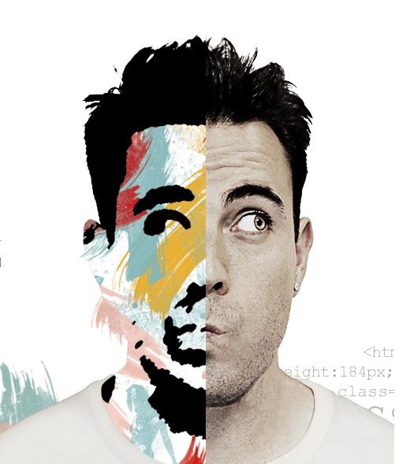

Weather now in SLIGO, IE
Here is my data from the weather API!
designer
Designer with a passion for designing beautiful and functional user experience

Tips for writing a great About Me page for your website, portfolio, or blog. Why you should have one, and what to highlight and focus on, with examples.